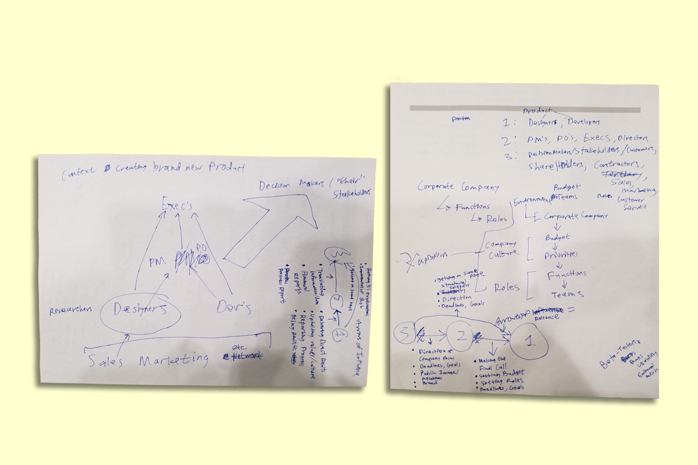

Made as a practical application of ethnographic methods and human-centered cognitive design principles for the Cognitive Design Studio.
Role
As a UX Designer I actively sought out user needs and wants to translate into insights that helped inform the development of a design solution that addressed said needs and wants.
As a User Researcher I leveraged ethnographic methods in the field to interview and gather information on the project's userbase that informed essential design decisions made further down the development process.
Team Size
6
Tools
Outreach and Research, Ethnographic Field Methods and Analysis, Google Sheets
Skills
UX Design, User Research
Time
Mar 2018 – June 2018
Problem
Designers and developers often have differing levels of expertise in the others' field and as a result this discrepancy can lead to difficulties in communicating feedback for a project.
How can we help facilitate the feedback process by addressing this gap in expertise?
Solution
A collaborative guidebook for communicating feedback in the feedback sessions during the period of addressing project progress at certain stages of completion and whenever an employee feels there is a communication issue on a project.
Exploring and Defining the Problem Space
Reaching Out to Potential Userbase
"Product Managers, Product Owners - are they really different?" meetup at ProductTank San Diego, where we scouted for contacts.
Once the team was formed, we decided to explore our problem space and talk to potential users to define and refine the design challenge we were solving.
Connections
We began by reaching out to professional designers and developers we knew as well as cold-calling those we didn't to broaden the userbase's scope and investigate what problems they had, how their feedback processes worked, interactions with other departments and teams, etc.
Industry Meetups
Another avenue we took was to attend industry meetups where we could talk with developers, designers, and even secondary stakeholders. In the ProductTank meetup shown above, we managed to connect with product managers and owners and UX Designers who helped provide helpful information and interviews.
Insights, Problems, and Lessons Learned
Highlights from out interviews where we aggregated them and dissected them for key takeaways.
Key Insights
Problems
Lessons Learned
Defining the Challenge
Our mission statement that helped us keep focus on design goals. Transcription: “We are solving the differing expertise between designers and developers by designing collaborative activities surrounding feedback.”
Field Research and Interviewing
Interview Guidelines
Online Surveys
Two of the surveys we sent out in the wild. Made with Google Forms.
“Team Feedback and Designers: A User Research Survey” aimed to target how design and development teams received and incorporated feedback into their work.
“Feedback Incorporation Survey” focused on collecting information on how individual designers and developers interacted with feedback in their work.
Organizing Research
Affinity Diagramming
Initial organization of concepts and early findings.The team researching and affinity diagramming. You can see me between my teammates' heads!A close-up of a section of our affinity diagram, “developers' challenges/concerns with design”.The full view of the affinity diagram.
Identity Models

Brainstorming we did to conceptualize the identity model poster.A clear draft of how we would visually organize the information on the identity model poster.Our final Identity model poster.
Ideation Process
Storyboarding
One of a few storyboards to help us ideate possible design solutions.
Discussion
The team discussing how we would direct the flow of feedback towards the end of the ideation process.
Divergence
Another teammate's sketches of visual aids for heping designers and developers collaborate better.Sketch for a rating system and its use with feedback.A color-coding idea I had that stemmed from an earlier concept of using board games for collaboration.
Convergence
Early whiteboard drafting with our mission statement to keep us on track.Making progress: the design is coming together.Coming to a consensus; the birth of the guidebook's blueprints.A piece of the digital wireframes for the finalized guidebook. We see the rating sheet and a section for going over the project overview and feedback.
Testing Ideas
Final Design Solution
The final guidebook, made in Illustrator by another teammate.